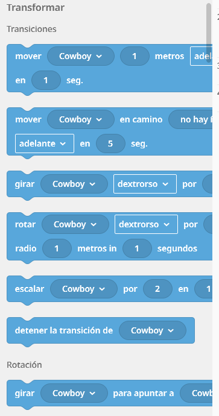

Es el motor de movimiento de tus proyectos en CoSpaces. Estos bloques de color azul permiten desplazar, rotar y cambiar el tamaño de cualquier objeto mediante transiciones, lo que significa que el cambio no ocurre de golpe, sino de forma fluida durante el tiempo (en segundos) que tú decidas configurar. Dentro de este menú puedes definir distancias en metros, direcciones precisas (adelante, atrás, izquierda, derecha), sentidos de giro (dextrorso/sentido horario o sinistrorso/antihorario) e incluso trayectorias circulares con un radio determinado.
